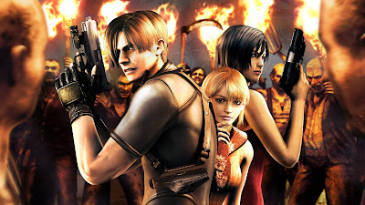

Setelah beberapa tahun dunia berjalan damai. Pada tahun 2004 muncul berita yg menghebohkan warga Amerika ketika Ashley Graham anak dr Presiden Amerika diculik. Presiden pun menyuruh Leon Scott Kennedy utk mencari anaknya yg hilang di Spanyol. Leon berangkat sendiri dari Amerika ke Spanyol, sesampainya di Spanyol Leon meminta 2 polisi amatir Spanyol utk mengantarnya menuju desa yg bernama El Pueblos. Setelah sampai di mulut desa Leon meningalkan mereka berdua dan masuk kerumah yg berdiri didekat mobil, sesampainya didalam rumah Leon bertanya pada sipemilik rumah sambil menunjukan foto Ashley tp pemilik rumah diam dan tiba2 mengambil kapak untuk membunuh Leon, dengan sigap Leon pun menembaknya. Diluar desa pun terjadi kegaduhan yaitu terjadi tabrakan mobil yang menabrakan Mobil milik polisi Spanyol tersebut hingga terjatuh dalam jurang dan jembatan pun ikut runtuh, sehingga membuat jalan tidak bias dilalui lagi. Leon pun akhirya melanjutkan perjalananya.
Sampai dia masuk ke Desa El Pueblos. Leon dikepung oleh Puluhan orang yg bertingkah aneh dan seperti memusuhi Leon, Leon yg berlindung didalam rumah dan akhirnya harus melawanya sampai ada bunyi lonceng yg membuat semua penduduk pada pergi entah kemana. Setelah ditelusuri Leon kaget terdapat Del Lago monster buaya yg mengerikan dan berubahnya penduduk dgn kepala pecah dan mengeluarkan sejenis parasit, kali ini bukan zombie yg ditemui melainkan Ganados (infeksi Virus Las Plagas). Leon jg bertemu dgn Luis Sera yg ternyata seorang peneliti yg disewa Lord Saddler utk membuat virus Las Plagas tetapi Luis mengkhianati Saddler karna tau bahwa Saddler Merencanakan akan menguasai dunia dgn menculik Ashley Graham, makanya dia malah ikut memerangi Ganados walau pada akhiry dia mati ditangan Saddler ketika memberikan Serum Anti Virus kepada Leon di Castle. Leon sendiri jg akan menghadapi musuh2 yg sangat berat yaitu Chainsawman (ganados yg bawa gergaji), Chief Mendez (seorang kepala desa pueblos yg sudah terjangkit virus las plagas), Del Lago (buaya yg terinfeksi virus jg), El Gigante (monster hutan yg menggerikan), Garrador (seorang tahanan yang matanya buta dengan punggung yang terjangkit virus las plagas), Armadura (Ksatria baju besi yg digerakan oleh Las Plagas), Carbereus (anjing), Zealot (Penduduk Castil), Novistador (Serangga nyamuk raksasa), Verdugo (Seorang pengawal Salazar yg mempunyai tubuh anti peluru), Ramon Salazar (seorang pemimpin di Castil yg berubah menjadi monster), J.J (Tentara yg terinfeksi Las Plagas), Iron Maiden & Regenerator (mutan buatan Saddler), U-3 (Monster yg sangat mengerikan).
Di sisi lain pihak Leon jg dibantu oleh seorang Merchant yg entah dari mana datangnya belum jelas apa dia Ganados atau bukan yg pasti dia bermata 1 dan selalu menawarkan senjata kepada Leon, dilain pihak Wesker menyuruh 2 orang andalanya yaitu Jack Krauser & Ada Wong, Leon pun sempat terkejut ketika bertemu dgn Ada lagi karna setau Leon dia telah tewas ketika kejadian di Raccon City tapi ternyata dia masih hidup. Ada ditugaskan utk mencari Sampel Virus Las Plagas dan juga sebenarnya utk membunuh Leon tapi Ada tak mau bahkan ketika Krauser mau membunuh Leon, Ada pun menolongnya walau Ada dan Krauser sebenarnya sepihak. Krauser sendiri ditugaskan oleh Wesker untuk membunuh Saddler tapi dia malah mengkhianati dgn menjadi tangan kananya Saddler bahkan Ashley yang menculik adalah Krauser, pada pertempuran dgn Leon, Krauser punya gerakan lincah yang membuat Leon sulit menembaknya, ketika Krauser sudah tersudut dia bermutasi tanganya berubah jd pisau walau pada akhirnya dikalahkan oleh Leon tapi dia belum mati cuma pingsan dan dia baru bener2 mati ditangan Ada Wong.
Singkat cerita Ashley berhasil diselamatkan, pertarungan terakhir melawan Saddler pun dimulai. Ada digantung diatas Saddler yg sudah berubah jd Monster, Leon pun berhasil menyelamatkan Ada dgn melemparkan pisau ke tambang hingga Ada jatuh, Ada pun segera lari dan Leon pun berhadapan dgn Saddler dan pada akhirnya Ada memberikan Rocket Launchet Special kepada Leon dan Leon menembaknya ke Saddler hingga tewas. Tetapi lagi lagi Ada menodong kepala Leon sambil meminta sampel Virus Las Plagas. Ada pergi sambil memasang bomb dipulau tersebut, Leon pun mengambil Jet Key sambil lari bersama Ashley utk pergi dari pulau menggunakan Jet Ski, Pulau pun hancur lebur dan mereka selamat. Ada berhasil mendapatkan sampel virus tersebut dan membawanya ke Wesker.
Source Article

Resident Evil 4

UP